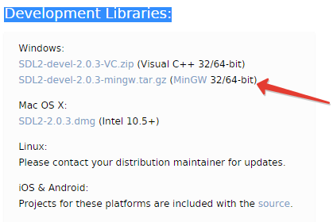
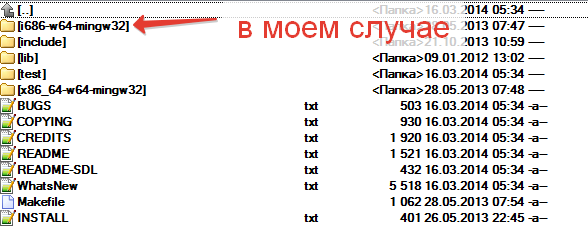
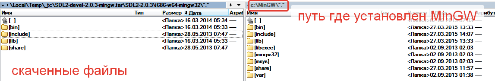
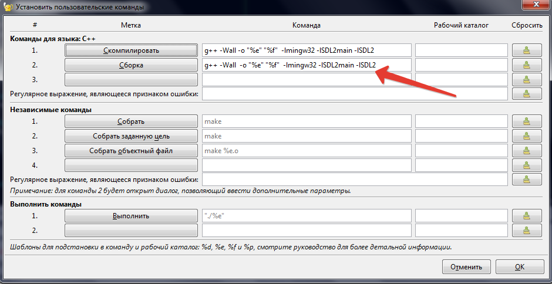
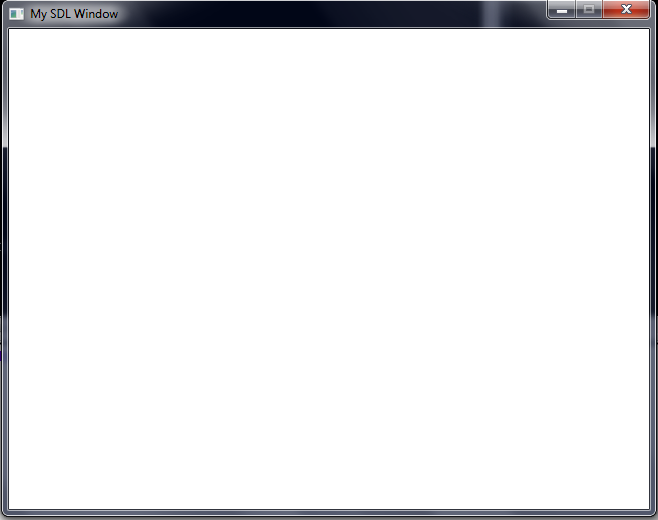
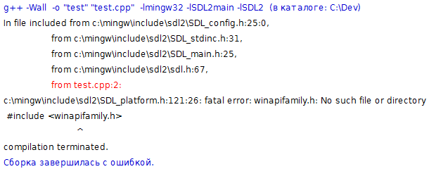
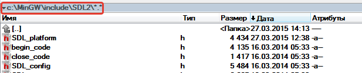

Simple DirectMedia Layer (SDL) — это свободная кроссплатформенная мультимедийная библиотека, реализующая единый программный интерфейс к графической подсистеме, звуковым устройствам и средствам ввода для широкого спектра платформ. Данная библиотека активно используется при написании кроссплатформенных мультимедийных программ (в основном игр).
SDL кроссплатформенная библиотека. Здесь я кратко поясню как можно установить SDL для разработки приложений на Windows с использованием компилятора MinGW. Почему я выбрал именно MinGW? Поскольку я ориентируюсь на кроссплатформенную разработку, и код написанный на MinGW можно будет без проблем перенести на Linux.
Хочу заменить что я описываю установку в марте 2015, и поэтому со временем что-то может поменяться, но скорее всего суть останется прежней.
Для начала вам нужно зайти на сайт SDL https://www.libsdl.org/ и скачать его версия 2.0 для window, обратите внимание что вам нужны Development Libraries :
Скачивайте и в распакованном архиве выбирайте версию для своей платформы.
И тут у вас 2 варианта, либо указать путь компилятору где находятся заголовочные файлы *.h и файлы библиотек *.a (для MinGW), или можете вручную забросить файлы в стандартные папки компилятора.
Чтобы указать компилятору где искать include
-IвашПуть-LвашПутьОткрыть папку с установленным MinGW и скопировать библиотеки для вашей платформы:
И это все!
Чтобы собрать программу, компилятору нужно указать ссылки на библиотеки
-lmingw32 -lSDL2main -lSDL2 Я использую для небольших программ geany http://www.geany.org/ и команды компиляции выглядят следующим образом:
Теперь создайте файл (например test.cpp), и попробуйте скомпилировать следующий код (просто создает окно, которое закрывается через некоторое время):
// Using SDL and standard IO
#include <SDl2/SDL.h>
#include <stdio.h>
// Screen dimension constants
const int SCREEN_WIDTH = 640;
const int SCREEN_HEIGHT = 480;
int main(int argc, char* argv[]) {
// The window we'll be rendering to
SDL_Window* window = NULL;
// The surface contained by the window
SDL_Surface* screenSurface = NULL;
// Initialize SDL
if( SDL_Init( SDL_INIT_VIDEO) < 0 ) {
printf( "SDL could not initialize! SDL_GetError: %s\n", SDL_GetError() );
}
else {
// Create window
window = SDL_CreateWindow("My SDL Window", SDL_WINDOWPOS_CENTERED, SDL_WINDOWPOS_CENTERED,
SCREEN_WIDTH, SCREEN_HEIGHT, SDL_WINDOW_SHOWN );
if( window == NULL ) {
printf( "Window could not be created! SDL_GetError: %s\n", SDL_GetError() );
}
else {
// Get window surface
screenSurface = SDL_GetWindowSurface( window );
// Fill the surface white
SDL_FillRect( screenSurface, NULL, SDL_MapRGB( screenSurface->format, 0xFF, 0xFF, 0xFF));
// Update the surface
SDL_UpdateWindowSurface( window );
// Wait two seconds
SDL_Delay( 2000 );
}
}
// Destroy window
SDL_DestroyWindow( window );
// Quit SDL subsystems
SDL_Quit();
return 0;
}
При запуске у вас будет пустое окно:
Теперь вы можете, например, подключить OpenGL и сделать свою игру! Не забывайте, чтобы ваша программа запускалась на других компьютерах нужно копировать вместе с *.exe файлом, еще и файл SDL2.dll (Можно скачать с сайта или взять из архива который вы скачали). Ложить его нужно вместе с exe файлом
В зависимости от версии SDL у вас может возникнуть следующая проблема:
Описание проблемы есть на stackoverflow
Вопрос на stakoverflowЭто ошибка в заголовочном файле SDL. Вы можете скачать обновленный файл (Скачать)
и заменить его в папке, куда вы скопировали библиотеки, в моем случае:
Теперь компиляция должна пройти успешно (если нет, посмотрите или правильные версии библиотек вы скопировали)